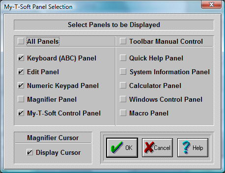

| My-T-Soft®: for Windows; Indestructible Keyboards and Indispensable Utilities; Version 1.80; User's Guide | ||
|---|---|---|
| Prev | Next | |

My-T-Soft lets you select which panels are open every time you start My-T-Soft.
If you want ALL panels to be open every time you run My-T-Soft, click on the "All Panels" Check-Button.
To allow manual control of opening & closing the Tool Bar, place a check-mark in the Toolbar Manual Control. When enabled, a 3-click (1-2-3) click on a non-button (e.g. border or other non-key area) will toggle the Tool Bar to open if closed, and to close if opened.
You can click on-and-off each individual panel.
The panels with a check-mark will be open each time you start My-T-Soft.
To Display the cursor within the Magnifier, place a check-mark in the Display Cursor Check-Button.
Press the OK Button.
If you do not want to save your changes, press the CANCEL button.